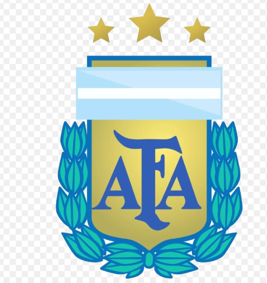
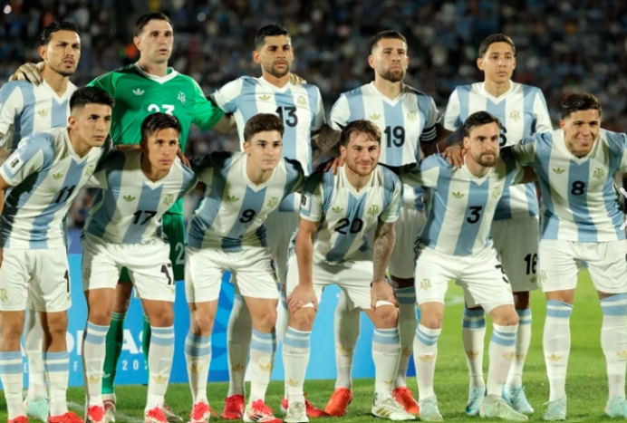
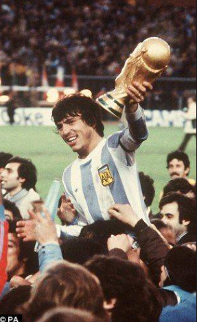
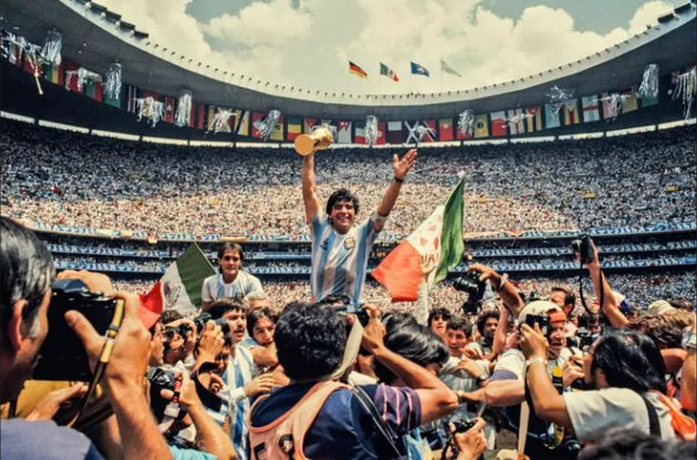

Lionel Messi levantando la Copa del Mundo en Qatar 2022.

La Selección Argentina es una de las potencias más grandes del fútbol mundial. Ha conquistado la Copa del Mundo en tres ocasiones históricas: 1978, 1986 de la mano de Diego Armando Maradona, y recientemente en 2022 liderada por Lionel Messi.

Tras una final inolvidable contra Francia, la Scaloneta logró bordar la tercera estrella en el escudo. Este hito consolidó a una generación dorada de futbolistas que devolvió la máxima alegría a todo el pueblo argentino. ¡Un logro que quedara grabado para siempre en la historia del deporte!
Momentos destacados de nuestra querida seleccion nacional:

